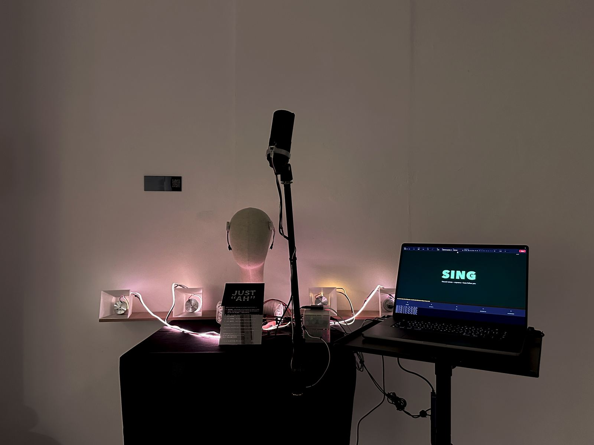
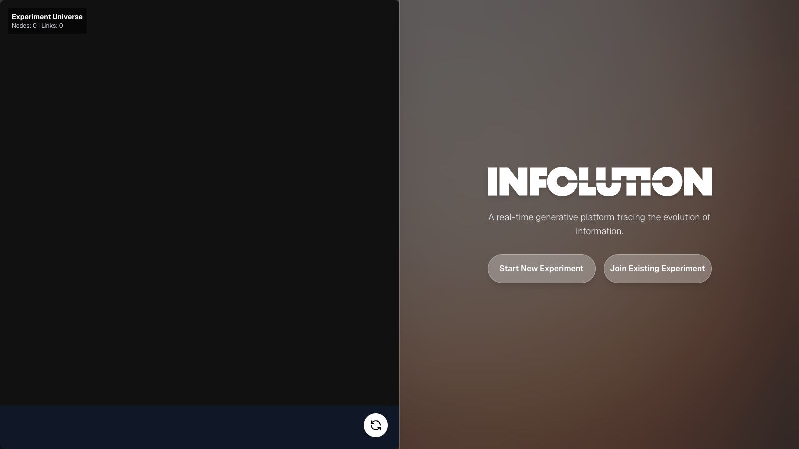

Solo ChoirResearchMA thesisDegree show 2026
A vocal instrument that turns one singer into a choir. Sing, and it answers with soprano, alto, tenor and bass, generated live by neural voice models on a laptop CPU. A tabletop instrument with two wearable prototypes, a bone-conduction headband and an exciter collar, for feeling the harmony in the body.
Choir of Three (and One)Sound
A DDSP model trained on ~10 minutes of my own singing sings three parts of a Bach chorale; the AI yields to silence when I hold my own part.
The BonnetWearable
An anti-surveillance headpiece: a custom-trained YOLOv8 model spots a CCTV camera and a servo drops a fabric veil over the face — reclaiming the gaze.
Fabri-FormRobotics
An embodied robotic interface for pattern-cutting: a multimodal LLM reads a hand-drawn sketch, generates 2D cutting paths, and a Pico-driven laser traces them onto fabric.
Gesture-FloatHardware
A wireless interactive flying unit with embodied control — an arm-mounted Pico W streams hand pitch and roll over Wi-Fi to a helium balloon unit, hand-soldered for stable, organic flight.

InfolutionWeb
A live platform asking how the form and meaning of information evolve online — uploaded images mutate through AI into branching 3D information trees. 72 participant interactions studied.
Draping DuetPerformance
A real-time audiovisual installation reframing fashion draping as choreography — StreamDiffusion turns the atelier into flowing silk while a mic amplifies the ASMR friction of the cloth.
▦ Bye Default · PSH Atrium, Goldsmiths · May 2026
Bye Default · Harmonizing!Exhibition
Exhibited Harmonizing!, a browser-based live vocal-harmony instrument, at the Computational Arts Pop-Up (Bye Default, PSH Atrium, Goldsmiths, May 2026) — and designed the show's graphics and caption cards for all 37 works.